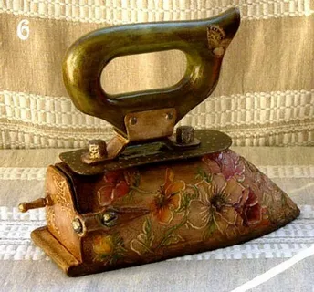
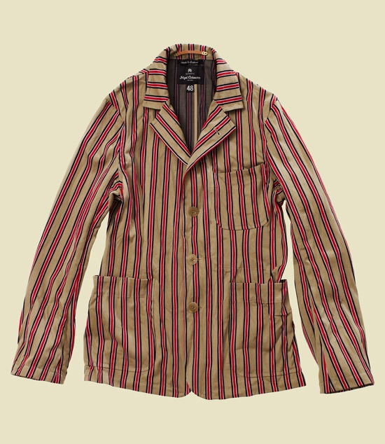

Что это такое?
Винта́ж — стилизованное направление в моде, особенно в одежде и предметах домашнего обихода, ориентирующееся на возрождение модных направлений прошлых поколений, эпох.
| Предметы быта | Одежда | Парфюмерия |
|---|---|---|
|  |  |  |
 |
 |
 |
 |
 |
 |
Где покупать?
- Strogo Vintage — московская ассоциация ценителей винтажа с небольшим шоурумом в центре, где можно воочию увидеть и примерить все вещи. Идти сюда стоит за романтичными платьями, шелковыми рубашками и отлично сидящими джинсами.
- eBay — кладезь винтажа, где можно найти уникальные вещи по смешным ценам. Запрос лучше формулировать целенаправленно: название бренда, модель, размер.
- Etsy — онлайн-площадка со множеством продавцов винтажной одежды и аксессуаров от ноунейм до брендовых.